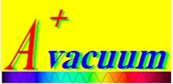
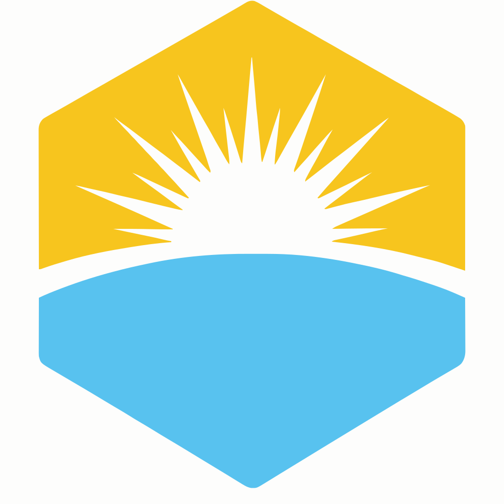

跨尺度构型设计与多频谱性能调控，实现紫外至微波的全波段光谱剪裁。在 SiO₂/Si₃N₄ 等 ≤3 种材料体系下达成五大功能协同。
基于蝶翅微纳结构仿生，以「构型换组分」路线，无需电力、零能耗实现被动降温 15–40°C，成果发表于 Optica (IF 10.4)。
面向新能源汽车涂装的致冷功能粉体材料，已进入安捷伦供应链体系，通过比亚迪、特斯拉、蔚来等下游客户推介。
签订 150 万元技术开发合同，共建校企联合实验室。安捷伦为比亚迪、特斯拉、蔚来、小鹏、吉利等整车厂 Tier-1 供应商，已出具采购意向书与市场渠道承诺函。

签订电子束蒸发镀膜机租赁合同，用于多功能光学薄膜制备及粉体前驱体中试生产。设备极限真空 ≤5×10⁻⁴ Pa，最大镀膜幅宽 1.3m。

自创企业，聚焦「AI 智冷炫彩功能粉体」的产业化。以高校研发 + 企业联合验证 + 代工生产的轻资产模式，推动辐射致冷涂料在新能源汽车领域的规模化应用。
| 姓名 | 学历 | 届别 | 就业单位 | 单位性质 | 城市 |
|---|---|---|---|---|---|
| 杨贵钦 | 博士后 | — | 昆明理工大学机电工程学院 | 高校（硕导） | 昆明 |
| 严潇远 | 硕士 | 2023届 | 华为南京研究所 | 企业 | 南京 |
| 邹启玄 | 硕士 | 2021届 | 南方电网数字电网科技 | 企业 | 广州 |
| 舒啸驰 | 硕士 | 2023届 | 中国民主同盟深圳市委员会 | 政府机关 | 深圳 |
| 高毓阳 | 硕士 | 2023届 | 石家庄信息工程职业学院 | 高校 | 石家庄 |
| 吉健华 | 硕士 | 2023届 | 华南理工大学 | 高校 | 广州 |
| 邢红云 | 博士 | 2024届 | 大湾区大学 | 高校 | 东莞 |
* 名单持续补充中
课题组处于快速成长期，产业转化前景广阔。导师亲自指导实验规划与论文写作，确保每位学生得到充分关注。
常年招收具有 物理、材料、光学工程、高分子、微纳加工 背景的博士后、博士生及硕士生。
投递简历至 wangwanlin@gbu.edu.cn